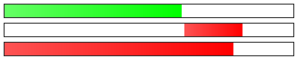
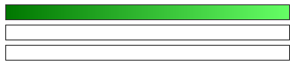

Objectifs & Présentation
Mise en situation & Problématique
En conception Web moderne, les animations CSS jouent un rôle capital dans l'expérience utilisateur (UX). Elles permettent de donner vie aux interfaces graphiques, de signaler l'état d'un chargement en arrière-plan, d'attirer l'attention sur une action ou de guider l'utilisateur de manière intuitive et fluide, le tout sans alourdir la page avec du code JavaScript.
Problématique d'étude : On souhaite concevoir et animer les indicateurs de chargement (barres de progression) illustrés ci-dessous :

1. Squelette HTML5 initial
Le document HTML contient trois conteneurs représentant chacun une variante d'animation :
<!DOCTYPE html>
<html lang="fr">
<head>
<meta charset="UTF-8">
<meta name="viewport" content="width=device-width, initial-scale=1.0">
<title>Barres de progression animées</title>
<link rel="stylesheet" href="style.css">
</head>
<body>
<div class="loader animation1">
<div class="progress-bar"></div>
</div>
<div class="loader animation2">
<div class="progress-bar"></div>
</div>
<div class="loader animation3">
<div class="progress-bar"></div>
</div>
</body>
</html>
Sans code CSS associé, le navigateur n'affiche rien à l'écran car les éléments <div> n'ont
ni
dimensions ni couleur de fond.
2. Définition du cadre et du remplissage initial en CSS
Définissons la boîte externe (le cadre) et le style de base de la barre intérieure :
- Cadre externe (
.loader) : largeur320px, hauteur16px, marge verticale5px, bordure fine#333 solid 1px, et positionnementposition: relative;. - Barre intérieure (
.progress-bar) : remplit initialement 100% de la largeur et de la hauteur, avec un dégradé linéaire de vert foncé (#007700) à vert clair (#65ff65).
.loader {
width: 320px;
height: 16px;
margin: 5px 0;
border: #333 solid 1px;
position: relative;
}
.animation1 .progress-bar {
width: 100%;
height: 100%;
background: linear-gradient(to right, #007700, #65ff65);
}
Auto-évaluation & Prérequis
Avant d'aborder les animations CSS, assurez-vous de maîtriser les fondamentaux CSS3 vus lors des séances précédentes :
Prérequis de la Séance n°3
- Sélecteurs CSS : sélection par classe (
.classe), identifiant (#id) et sélecteurs combinés descendants (ex..animation1 .progress-bar). - Modèle de boîte : dimensions (
width,height), marges externes (margin), bordures (border) et arrondis (border-radius). - Positionnement CSS : différence fondamentale entre
position: relative;etposition: absolute;ainsi que les coordonnéestop,bottom,left,right. - Arrière-plans avancés : dégradés linéaires avec
linear-gradient(direction, couleur1, couleur2).